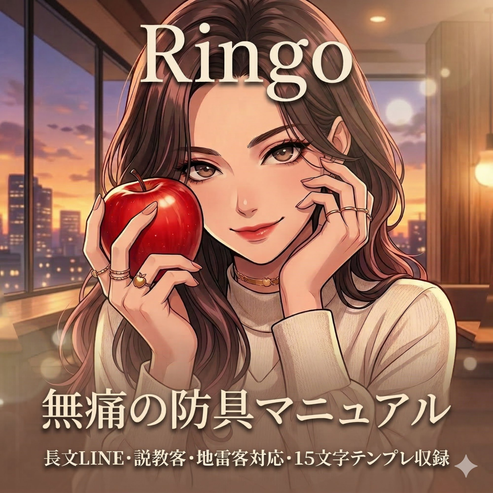

あなたがしんどいのは、あなたの接客が下手だからじゃない。
「お客様には尽くしなさい」「LINEはマメに返しなさい」「笑顔を絶やさなければ指名は増える」
そう教えた側の問題です。
優しい子ほど、その言葉を信じて、全部やろうとする。
やればやるほど心がすり減る。
でも結果は出ない。
結果が出ないから「もっと頑張らなきゃ」と思う。
この悪循環を作ったのは、あなたじゃない。
やり方を間違えて教えた環境のせいです。
全部、あなたが弱いからじゃないです。
何の防具も持たずに、密室で、一人で、心をすり減らしながら働いているからです。
本当は、ただ稼ぎたいわけじゃないはず。
雑に扱われず、無理してる感も出さず、それでもちゃんと価値を払われる働き方が欲しいはず。
そしてできるなら、いつかこの世界に人生を握られない状態まで持っていきたい。
本当はもう、優しい方が損をする働き方を続けたくないはず。
そして本当は、押しの強い相手ばかりが得をする働き方そのものを終わらせたいはず。
尽くせば尽くすほど、来るお客様の質が下がっている。
必死に営業LINEを送るほど、返信してくれるのは面倒な人ばかり。
写メ日記をマメに更新するほど、ダメ出ししてくる人が増える。
本当に長く通い続けてくれる穏やかなお客様は、「距離感を保てる子」にしか行かない。
頑張れば頑張るほど、そういうお客様から遠ざかっている。
うすうす気づいていても、じゃあどうすればいいかが分からないから、同じやり方を続けてしまう。
今と同じように笑って、同じように耐えて、同じように疲れて帰る日々。
1年後、鏡の前で気づくはずです。
目の下のクマが消えなくなっている。
休みの日も気持ちが休まらない。
「あと何年やれるんだろう」という不安が、前より大きくなっている。
心も、若さも、選択肢も、静かに削れていく。
怖いのは今日しんどいことじゃないです。
気づいた時にはもう、選べる未来が減っていることのほうが、ずっと怖い。
もう丸腰で出勤するのを、今日で終わりにしませんか。
今すぐ「無痛の防具マニュアル」
あなたの努力が足りなかったわけじゃないです。
「正しいやり方」を、誰も教えてくれなかっただけ。
お店は「もっと営業しなさい」としか言わない。
先輩は「慣れるよ」としか言わない。
SNSの情報は「稼ぐ方法」ばかりで、「心をすり減らさずに働く方法」を教えてくれる人がいなかった。
原因が分からないまま解決策を探しても、「でも私は違うかも」が消えません。
だから先に言います。
あなたの接客が悪いんじゃない。
接客の「型」を持っていなかっただけです。
型があれば、心まで全部持っていかれない。
このマニュアルは、自分の心と体を守りながら、穏やかに長く安定的に通い続けてくれるお客様に選ばれる働き方へ変えたい子のための実践書です。
※以下の方には向いていません。
このマニュアルは、こんな「あなた」のために書きました。
タイマーが鳴った後に帰り支度が遅いお客様に、もう愛想笑いしなくていい。
「時間です」と、静かに、でも迷いなく言える自分がいる。
オプション外のことをしつこく要求されても、空気が凍るのを怖がらない。
型があるから、断っても関係が壊れない言い方ができる。
帰りの電車で、お客様のLINEのことを考えていない。
自分の時間が、自分のものに戻っている。
本指のお客様は、全員、静かで穏やかな方ばかり。
容姿をバカにしてくる人も、プレイ中に無理を強いてくる人も、もういない。
「この子のところに来ると安心する」と言ってくれる人だけが、勝手に残っている。
雑に扱われず、無理してる感も出さず、それでもちゃんと価値を払われる。
優しい子が、ちゃんと報われる働き方。
それが、防具を持った後のあなたの日常です。
「今すぐこの人から離れたい」と思った時、言葉で境界線を引き、物理的な距離を取り、内勤さんを動かして安全に抜ける「3つのステップ」を渡します。密室で一人で怯える必要は、もうありません。
相手の承認欲求や支配欲を冷静に見抜いて、素の自分を守りながら対応するための4つの型。どんな地雷客が来ても、心まで全部持っていかれない。型があるだけで、帰宅後の疲れ方がまるで変わります。
長文営業で必死さを見せなくても、「この子のところなら休める」と感じてくれるお客様が残る発信の型を教えます。頑張れば頑張るほど雑客が増える。この悪循環を、静かにひっくり返します。
退室時間を守らないお客様への対応。SNS嫉妬トラブルの防ぎ方。営業LINEの「やめどき」の判断。明日から現場で使える、20の答えをそのまま用意しています。
型を持つだけで、明日の出勤が変わります。
「無痛の防具マニュアル」を「毎晩、お客様のLINEに返信するだけで2時間かかっていました。返さなきゃ指名が減る、でも返すたびに心が削れる。マニュアルの『型』を入れてから、返信は1日15分に。それなのに本指は減るどころか、穏やかなお客様だけが残って。あの2時間が嘘みたいです。」
「正直、読む前は半信半疑でした。半年やって本指が1人だけ、その人もだんだん来なくなってた。『もう自分には向いてない』と思ってた。でも第5章の『沈黙の愛』を読んで、自分がやってきたことの全部が逆だったと気づいた。店外やめて、営業LINE止めて、怖かったけど1ヶ月後に新しく本指がついたんです。」
「今は週3出勤で月90万。本指は5人だけ。全員、静かで穏やかな方ばかり。出勤前に胃が痛くなることも、帰りの電車で泣くこともなくなりました。あの頃の自分に言いたい。『頑張り方を変えるだけで、こんなに楽になるよ』って。」
机上の空論ではなく、現場ですぐに使える「数」にこだわりました。
「29,800円は高い……」
出勤1回分の指名料です。その1回分で、これから先の全ての出勤に防具を持って行けるようになります。嫌なお客様に耐えて稼いだ3万円を、来月も再来月も同じように稼ぎ続けますか。
「私にもできるのかな……」
本指が1人しかいなかった子が、1ヶ月で新しい本指をつけました。特別な才能ではなく、「型」を知っているかどうか。それだけの差です。
「読む時間がない……」
待機中にスマホで読めます。全部読まなくても、第4章の「SOSフローチャート」だけ開いておくだけで、次の出勤から使えます。
「正直、こういう教材って怪しい……」
その感覚は正しいです。「誰でも簡単に稼げます」とは言いません。これは稼ぐためのマニュアルではなく、心をすり減らさずに働くための型です。やるのはあなた自身。ただ、型があるのとないのとでは、同じ出勤でも削られ方がまるで違います。
心理カウンセリングに通えば、1回8,000円×月4回で月32,000円。
しかもそれは「聞いてもらう」だけで、明日の接客は変わりません。
このマニュアルは、現場で今日から使える「型」と「テンプレート」を一括で手に入れるものです。
一度手に入れたら、閲覧期限なし。いつでもスマホで開けます。
出勤1回分の金額で、これから先の全ての出勤を変える土台を手に入れてください。

このページを閉じて、明日も同じように出勤しますか。
同じお客様に同じように耐えて、
帰りの電車や送迎車で同じように疲れて、
「いつまでこれ続くんだろう」と、また同じことを考えますか。
3ヶ月後も、半年後も、1年後も。
今と同じ場所にいて、でも心だけが少しずつすり減っている。
そうなる前に、手に取ってほしい。
次の出勤を、もう丸腰で迎えないでください。
決済完了後すぐに、入力したメールアドレス宛に専用URLが届きます。
1分後にはスマホで読み始められます。
正直、この価格で出すか迷いました。
でも、あの頃の私みたいに。
終電の電車で座り込んで、スマホを機内モードにして、
「もうやめよう」と思いながらも翌日また出勤して、
また同じようにメンタルが削られて帰ってくる。
あの日々を、何の武器も持たずに耐えている子がいると思うと、出さずにはいられなかった。
これを読んで、すぐに全部が変わるとは言いません。
でも、「型」を一つ持っているだけで、
同じ出勤でも、心の削られ方がまるで違うことは断言できます。
次の出勤から、少しだけ楽に帰れますように。
Ringo